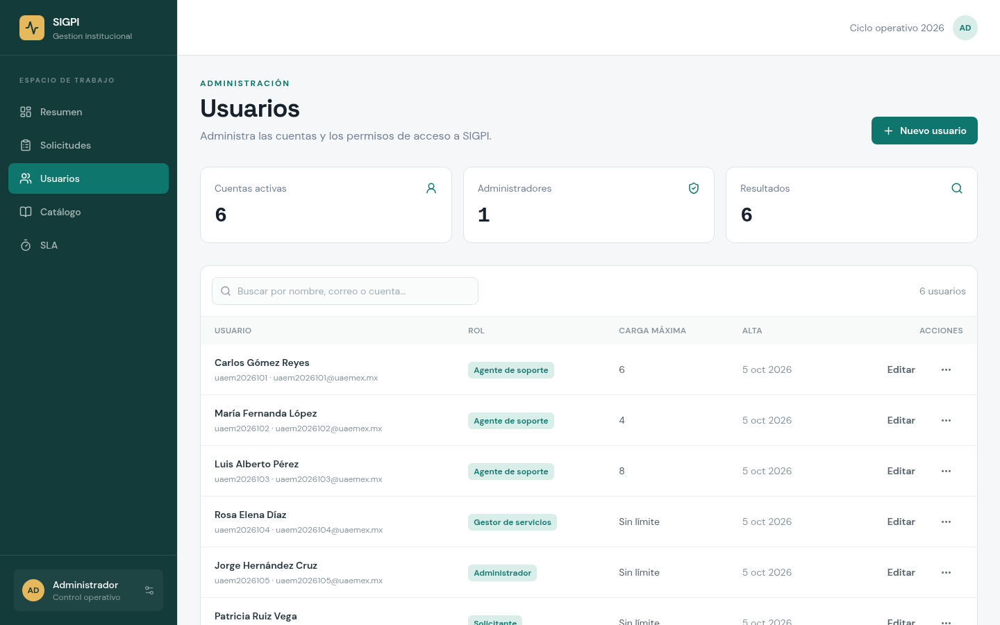
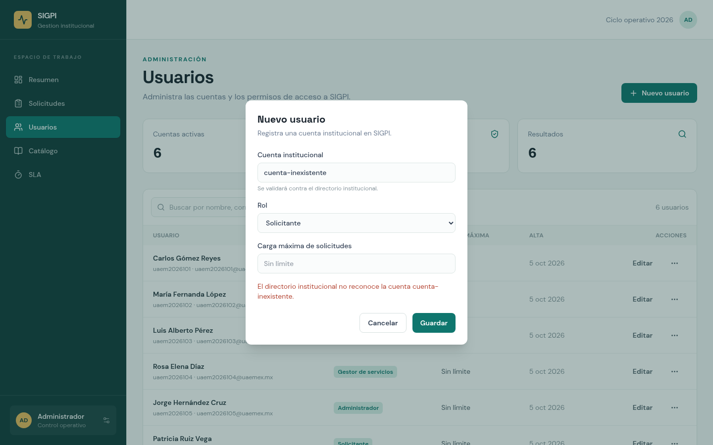
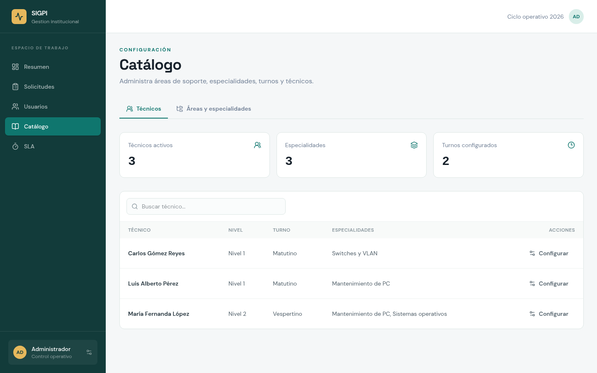
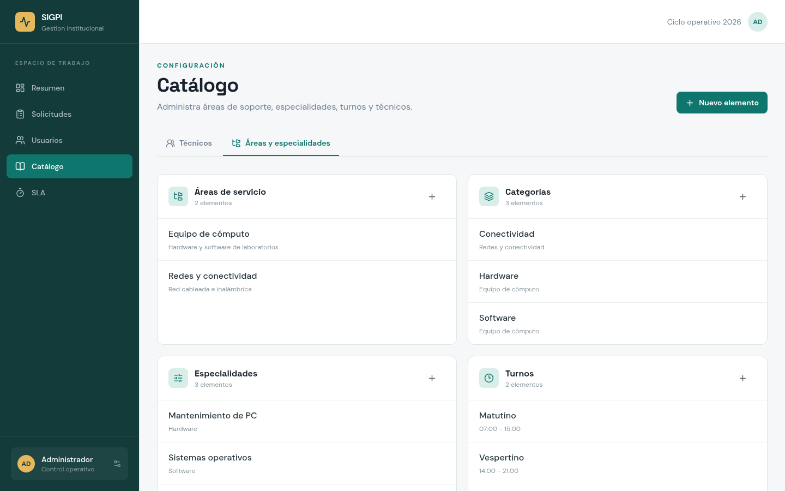
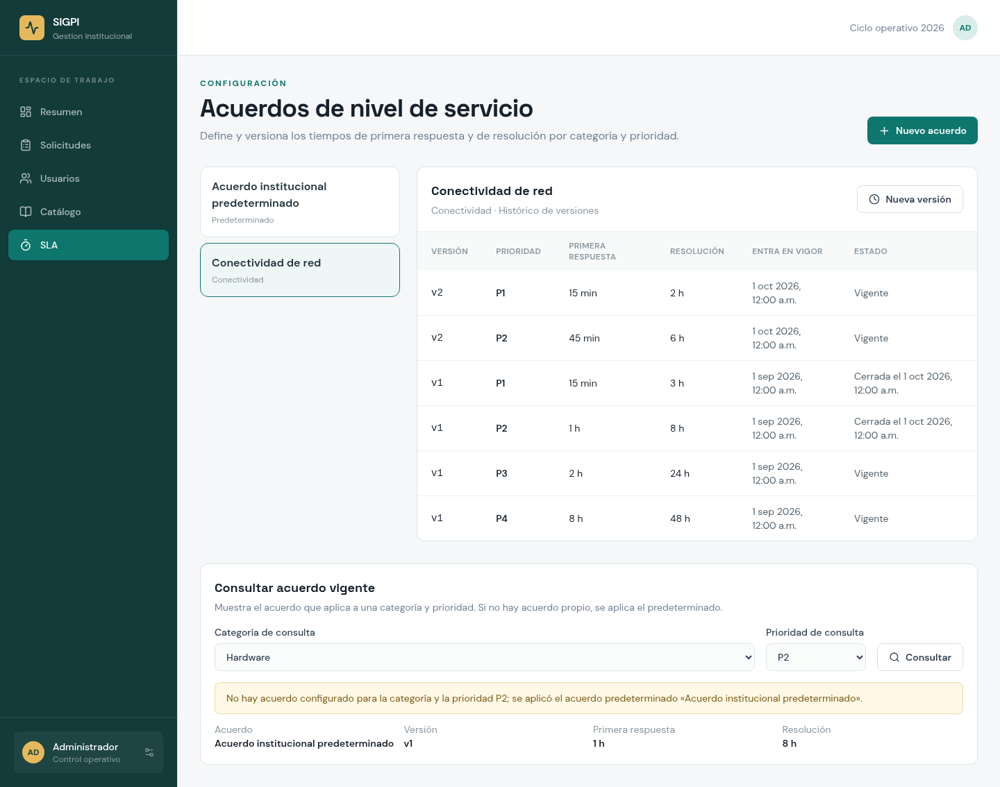
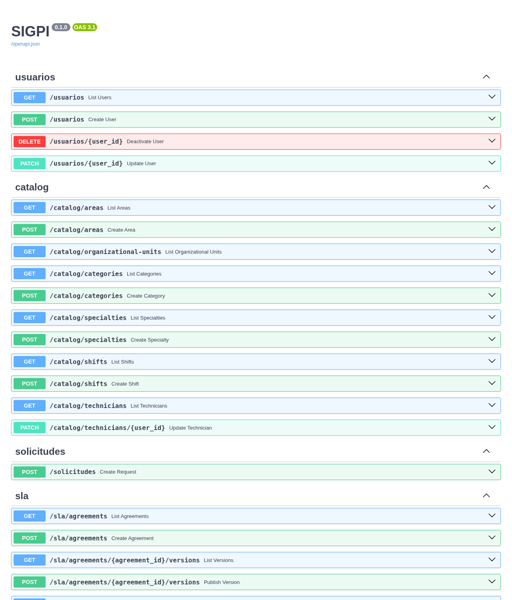

El Sprint 2 corresponde a la fase de Elaboración del Proceso Unificado. Su objetivo, fijado en el Sprint Backlog 2 (tarjeta S2-18), fue construir la base ejecutable del sistema (modelos y migraciones, integración continua, Docker Compose y cliente API tipado) y entregar en todas sus capas las historias que sirven de cimiento al resto del producto: cuentas y roles (HU-10.1), auditoría (HU-10.3), catálogo de técnicos y áreas (HU-11.1) y acuerdos de nivel de servicio (HU-08.1). Además se implementó el servicio de alta de solicitudes (HU-01.1) y se diseñó la bitácora de atención (HU-04.1).
Este documento describe los seis casos de uso trabajados durante el sprint. Para cada uno presenta su ficha (actor, precondiciones, flujos y postcondiciones), su relación con las historias de usuario y las reglas de negocio, la implementación por capas con fragmentos del código fuente, capturas de las pantallas y las pruebas automatizadas que verifican los criterios de aceptación. Al final se registran la trazabilidad, la velocidad del sprint y los ajustes para el Sprint 3.
| Dato | Valor |
|---|---|
| Fase RUP | Elaboración (Sprint 2 de 5) |
| Capacidad planeada | 154 h (144 h de desarrollo y 10 h de gestión), ≈ 19.2 h por integrante por semana |
| Periodo con actividad en el repositorio | 30 de septiembre al 4 de octubre de 2026 (commits y pull requests #2 a #8 etiquetados con S2-xx) |
| Corte de este documento | 4 de octubre de 2026, rama main en el commit 92674f9 |
| Roles Scrum | Product Owner: Haide Sánchez · Scrum Master: Emmanuel Bernal · Developers: todo el equipo |
| Fuentes | Tablero Kanban SIGPI v2 · Historias de Usuario SIGPI v3 · Sprint Backlog 2, RiskLog v2 y Registro de velocidad del Sprint 2 (carpeta backend/docs/Sprint_02V1) · repositorio del proyecto |
Tabla 1. Datos generales del Sprint 2.
| Historia | Título | Actor | Prioridad · tamaño | Tarjetas S2 | Caso de uso | Resultado |
|---|---|---|---|---|---|---|
| HU-10.1 | Administrar cuentas y roles | ACT-09 | Debe · M | S2-04, S2-05, S2-06 | CU-S2-01 | Realizada |
| HU-11.1 | Mantener el catálogo de técnicos y áreas | ACT-09 | Debe · M | S2-10, S2-11, S2-12 | CU-S2-02 | Realizada |
| HU-01.1 | Registrar una solicitud desde el portal | ACT-01 | Debe · M | S2-16 | CU-S2-03 | Parte S2 realizada continúa en S3 |
| HU-04.1 | Registrar el avance en una bitácora única | ACT-02 · ACT-03 | Debe · M | S2-17 | CU-S2-04 | Diseño realizado servicio en S3 |
| HU-10.3 | Auditar las acciones de administración | ACT-09 | Debe · S | S2-07, S2-08, S2-09 | CU-S2-05 | Realizada |
| HU-08.1 | Definir y versionar los acuerdos de nivel de servicio | ACT-04 | Debe · M | S2-13, S2-14, S2-15 | CU-S2-06 | Realizada |
Tabla 2. Historias del Sprint 2, caso de uso que las documenta y resultado. Las historias HU-01.1 y HU-04.1 tienen tarjetas en sprints posteriores (Tablero Kanban v2, tabla 11).
Una tarjeta se considera entregada cuando su producto está integrado en la rama main y, en el caso de las tarjetas de servidor e interfaz, cuenta con pruebas automatizadas (Definición de Terminado, Historias de Usuario v3, sección 2.6). Cada tarjeta indica su responsable en el tablero y, cuando fue distinto, quién la ejecutó; el detalle por commit está en el Registro de velocidad del Sprint 2.
api/openapi.ts.Figura A. Estado del tablero Kanban del Sprint 2 al 4 de octubre de 2026. Borde azul: desarrollo; borde ámbar: gestión.
| Tarjeta | Descripción | Entregable (en backend/docs/Sprint_02V1/) | Estado |
|---|---|---|---|
| S2-18 | Planeación y refinamiento | Sprint_Backlog_2_SIGPI.pdf | En validación |
| S2-19 | Revisión del catálogo de riesgos | RiskLog_v2_SIGPI.pdf | Entregada |
| S2-20 | Sprint Review 2 con el DTIC-FI | Este documento y la minuta SR-2 | Al cierre |
| S2-21 | Retrospectiva 2 y velocidad | Registro_de_Velocidad_Sprint_2_SIGPI.pdf | En validación |
Tabla 3. Tarjetas de gestión del Sprint 2 y su entregable en el repositorio.
Los casos de uso del sprint provienen de los casos de uso del sistema del Modelado de Negocios (SCU-01, SCU-04, SCU-08, SCU-10 y SCU-11). Cada historia de usuario concreta un escenario de uno de ellos. El diagrama distingue los casos implementados (borde verde) del que en este sprint solo se diseñó (borde azul punteado).
| Caso de uso | Nombre | Caso del sistema | Historia | Reglas | Estado |
|---|---|---|---|---|---|
| CU-S2-01 | Administrar cuentas y roles | SCU-10 | HU-10.1 | RN-19 | Implementado |
| CU-S2-02 | Mantener el catálogo de técnicos y áreas | SCU-11 | HU-11.1 | RN-08 | Implementado |
| CU-S2-03 | Registrar una solicitud con folio | SCU-01 | HU-01.1 | RN-01, RN-02, RN-03 | Implementado (servidor) |
| CU-S2-04 | Registrar el avance en la bitácora | SCU-04 | HU-04.1 | RN-10 | Diseñado |
| CU-S2-05 | Auditar las acciones de administración | SCU-10 | HU-10.3 | RN-19 | Implementado (servidor) |
| CU-S2-06 | Definir y versionar los acuerdos de nivel de servicio | SCU-08 | HU-08.1 | RN-05 | Implementado |
Tabla 4. Casos de uso del Sprint 2 y su origen en el Modelado de Negocios.
Todos los casos de uso siguen la arquitectura en capas definida en el ADR del Sprint 1 (S1-03). La regla de dependencia es única: cada capa conoce solo a la inmediatamente inferior. Las reglas de negocio viven en los servicios y en el dominio, de modo que se pueden probar sin servidor web y con una base de datos en memoria.
| Capa | Paquete | Responsabilidad en el Sprint 2 |
|---|---|---|
| Presentación (API) | api/usuarios.py, api/routers/catalog.py, solicitudes.py, sla.py | Recibe la petición HTTP, valida el cuerpo con Pydantic y traduce las excepciones del servicio a códigos HTTP (404, 409, 422). |
| Esquemas | schemas/identity.py, catalog.py, request.py, sla.py | Contratos de entrada y salida; rechazan campos desconocidos y valores inconsistentes. |
| Aplicación (servicios) | services/usuario_service.py, catalog_service.py, solicitud_service.py, auditoria_service.py, sla_service.py | Orquestan el caso de uso y aplican las reglas RN-xx. |
| Dominio | domain/directory.py, domain/priority.py | Puerto del directorio institucional y matriz de prioridad, sin dependencias de framework. |
| Acceso a datos | repositories/*, models/*, alembic/ | Consultas SQLAlchemy asíncronas y migraciones versionadas, incluido el disparador de la auditoría. |
| Integración | integrations/directory_client.py | Adaptador provisional del directorio; el de Microsoft 365 llega en S3-03 sin cambiar las demás capas. |
| Frontend | features/users, catalog, sla; api/*.ts | Páginas React + TypeScript con TanStack Query; tipos generados desde el esquema OpenAPI. |
Tabla 5. Capas que intervienen en los casos de uso del Sprint 2.
La capa de dominio declara el puerto del directorio institucional como un protocolo. El servicio de cuentas depende de esta abstracción y no del proveedor concreto, lo que permite usar un adaptador de prueba hoy y el de Microsoft 365 en el Sprint 3.
13 14 15 16 17 18 19 20 21 22 23 24
@dataclass(frozen=True) class DirectoryProfile: institutional_id: str full_name: str email: str user_type: UserType class DirectoryClient(Protocol): async def fetch_profile(self, institutional_id: str) -> DirectoryProfile | None: """Return the profile for an institutional account, or None if unknown.""" ...
FastAPI publica el contrato de la API en /openapi.json. La herramienta openapi-typescript genera a partir de él el archivo frontend/src/api/openapi.ts (≈ 1 350 líneas), y types.ts expone los tipos que usan las pantallas. Así, si un esquema de Pydantic cambia, el compilador de TypeScript señala los componentes afectados y el contrato no se duplica a mano.
1 2 3 4 5 6 7 8 9 10 11 12 13 14 15 16 17 18 19 20 21 22 23 24 25 26 27 28
import type { components } from './openapi' export type ApiSchemas = components['schemas'] export type UserRole = ApiSchemas['RoleName'] export type User = Omit<ApiSchemas['UserRead'], 'roles'> & { roles: UserRole[] } export type CreateUserInput = ApiSchemas['UserCreate'] export type UpdateUserInput = ApiSchemas['UserUpdate'] export type ServiceArea = ApiSchemas['ServiceAreaRead'] export type OrganizationalUnit = ApiSchemas['OrganizationalUnitRead'] export type Category = ApiSchemas['CategoryRead'] export type Specialty = ApiSchemas['SpecialtyRead'] export type Shift = ApiSchemas['ShiftRead'] export type Technician = ApiSchemas['TechnicianRead'] export type TechnicianUpdate = ApiSchemas['TechnicianProfileUpdate'] export type ServiceAreaInput = ApiSchemas['ServiceAreaCreate'] export type CategoryInput = ApiSchemas['CategoryCreate'] export type SpecialtyInput = ApiSchemas['SpecialtyCreate'] export type ShiftInput = ApiSchemas['ShiftCreate'] export type Request = ApiSchemas['RequestRead'] export type CreateRequestInput = ApiSchemas['RequestCreate'] export type Priority = ApiSchemas['Priority'] export type SlaAgreement = ApiSchemas['SlaAgreementRead'] export type CreateSlaAgreementInput = ApiSchemas['SlaAgreementCreate'] export type SlaVersion = ApiSchemas['SlaVersionRead'] export type CreateSlaVersionInput = ApiSchemas['SlaVersionCreate'] export type EffectiveSla = ApiSchemas['EffectiveSlaRead']
29 30 31 32 33 34 35 36 37 38 39 40 41 42 43 44 45 46 47 48 49 50 51 52 53 54 55 56
export async function apiFetch<T>( path: string, init?: RequestInit, ): Promise<T> { const headers = new Headers(init?.headers) if (init?.body && !headers.has('Content-Type')) { headers.set('Content-Type', 'application/json') } const response = await fetch(`${apiUrl}${path}`, { ...init, headers, }) if (!response.ok) { let detail = `API request failed with status ${response.status}` try { const body = (await response.json()) as { detail?: unknown } detail = formatApiDetail(body.detail) ?? detail } catch { // Keep the status-based message when the server response is not JSON. } throw new Error(detail) } return response.json() as Promise<T> }
Cada caso de uso se documenta con su ficha, los criterios de aceptación de la historia de usuario y su estado de cumplimiento, la implementación por capas y la evidencia (código, pantallas y pruebas).
| Historia de usuario | HU-10.1 · Como administrador del sistema, quiero dar de alta, modificar y desactivar cuentas y asignar roles sincronizados con el directorio institucional, para que cada persona acceda solo a los módulos que su función requiere (RN-19). |
| Actor principal | Administrador del sistema (ACT-09) |
| Actor de apoyo | Directorio institucional (ACT-06), por ahora mediante un adaptador provisional |
| Origen | SCU-10 · proceso transversal · RN-19 · prioridad Debe · tamaño M |
| Tarjetas | S2-04 (servidor) · S2-05 (interfaz) · S2-06 (pruebas) |
| Precondiciones | Los roles existen en la base de datos (migración 4d9e0a2b7c6f_seed_identity_roles). El administrador está en la pantalla Usuarios. |
| Flujo principal (alta) |
|
| Flujos alternos |
|
| Postcondiciones | La cuenta queda registrada con datos del directorio y un único rol vigente. |
| Endpoints | GET /usuarios · POST /usuarios · PATCH /usuarios/{user_id} · DELETE /usuarios/{user_id} |
| Criterio | Enunciado (Dado–Cuando–Entonces) | Estado y evidencia |
|---|---|---|
| AC1 | Dado que ingreso una cuenta institucional válida, cuando asigno un rol compatible con su perfil, entonces el sistema registra la cuenta, notifica al usuario y lo asienta en la bitácora de auditoría. | Cumplido: registro test_alta_valida_* y prueba de pantallaPor integrar: auditoría el servicio existe (CU-S2-05); falta invocarlo desde el alta Pendiente: aviso servicio de notificaciones (S4) |
| AC2 | Dado que el directorio no reconoce la cuenta, cuando intento darla de alta, entonces el sistema rechaza el alta. | Cumplido test_cuenta_no_reconocida_* (HTTP 404, sin registro) y prueba de pantalla |
Tabla 6. Criterios de aceptación de HU-10.1.
El servicio aplica las validaciones en orden: primero descarta duplicados, después consulta el directorio y, por último, verifica que el rol esté configurado. Cada condición lanza una excepción de negocio propia, que el router traduce a un código HTTP.
29 30 31 32 33 34 35 36 37 38 39 40 41 42 43 44 45 46 47 48 49 50 51 52 53 54 55 56 57 58 59 60 61 62 63 64
async def create_user( self, *, institutional_id: str, role: RoleName, unit_id: uuid.UUID | None = None, max_load: int | None = None, ) -> User: existing = await self.repository.get_by_institutional_id(institutional_id) if existing is not None: raise DuplicateUserError(f"La cuenta {institutional_id} ya está registrada en SIGPI.") profile = await self.directory.fetch_profile(institutional_id) if profile is None: raise UnknownDirectoryAccountError( f"El directorio institucional no reconoce la cuenta {institutional_id}." ) role_row = await self.repository.get_role_by_name(role) if role_row is None: raise RoleNotConfiguredError(f"El rol {role.value} no está configurado.") user = User( institutional_id=profile.institutional_id, full_name=profile.full_name, email=profile.email, user_type=profile.user_type, unit_id=unit_id, max_load=max_load, is_active=True, ) created = await self.repository.add(user) await self.repository.assign_role(created.id, role_row.id) loaded = await self.repository.get_by_id(created.id) assert loaded is not None return loaded
35 36 37 38 39 40 41 42 43 44 45 46 47 48 49 50 51 52 53
@router.post("", response_model=UserRead, status_code=status.HTTP_201_CREATED) async def create_user( payload: UserCreate, service: UsuarioService = Depends(get_usuario_service) ) -> UserRead: try: return await service.create_user( institutional_id=payload.institutional_id, role=payload.role, unit_id=payload.unit_id, max_load=payload.max_load, ) except UnknownDirectoryAccountError as exc: raise HTTPException(status_code=status.HTTP_404_NOT_FOUND, detail=str(exc)) from exc except DuplicateUserError as exc: raise HTTPException(status_code=status.HTTP_409_CONFLICT, detail=str(exc)) from exc except RoleNotConfiguredError as exc: raise HTTPException( status_code=status.HTTP_422_UNPROCESSABLE_ENTITY, detail=str(exc) ) from exc


Las pruebas de S2-06 cubren las dos capas. En el backend usan el router, el servicio y el repositorio reales contra SQLite en memoria (11 casos); en el frontend, Vitest y Testing Library verifican que la pantalla envíe el alta, recargue la lista y muestre el mensaje del directorio (5 casos).
81 82 83 84 85 86 87 88 89 90 91 92 93 94 95 96 97 98 99 100
def test_cuenta_no_reconocida_por_el_directorio_responde_404(client) -> None: response = _alta(client, institutional_id="cuenta-inexistente") assert response.status_code == 404 assert "cuenta-inexistente" in response.json()["detail"] def test_cuenta_no_reconocida_no_crea_ningun_usuario(client) -> None: _alta(client, institutional_id="cuenta-inexistente") assert client.get("/usuarios").json() == [] def test_cuenta_ya_registrada_responde_409(client) -> None: _alta(client) response = _alta(client) assert response.status_code == 409 assert KNOWN_ACCOUNT in response.json()["detail"]
| Historia de usuario | HU-11.1 · Como administrador del sistema, quiero mantener actualizadas las áreas de soporte, las especialidades, los turnos y las cargas máximas de los técnicos, para que la asignación automática use siempre información vigente (RN-08). |
| Actor principal | Administrador del sistema (ACT-09) |
| Origen | SCU-11 · proceso P-02 · RN-08 · prioridad Debe · tamaño M · depende de HU-10.1 |
| Tarjetas | S2-10 (servidor) · S2-11 (interfaz) · S2-12 (pruebas) |
| Precondiciones | Existe al menos una unidad organizacional activa y los técnicos tienen cuenta activa (CU-S2-01). |
| Flujo principal |
|
| Flujos alternos |
|
| Postcondiciones | El catálogo vigente queda disponible para el motor de asignación (HU-03.1); un técnico solo puede recibir asignaciones de sus especialidades habilitadas (RN-08). |
| Endpoints | GET /catalog/organizational-units · GET|POST /catalog/areas · /catalog/categories · /catalog/specialties · /catalog/shifts · GET /catalog/technicians?specialty_id= · PATCH /catalog/technicians/{user_id} |
| Criterio | Enunciado | Estado y evidencia |
|---|---|---|
| AC1 | Dado que doy de alta un área y asocio a sus técnicos, cuando defino especialidad, turno, categorías y carga máxima, entonces el sistema valida el catálogo y lo pone a disposición del motor sin reiniciar el servicio. | Cumplido 5 pruebas de API de vigencia inmediata (S2-12) y 13 pruebas del servicio (S2-10) |
Tabla 7. Criterio de aceptación de HU-11.1.
La vigencia inmediata se logra por diseño: el servicio no guarda nada en caché, así que cada consulta llega a la base de datos. La regla RN-08 se aplica en un único punto, la actualización del perfil del técnico, que verifica que todas las especialidades existan antes de asignarlas.
1 2 3 4 5 6 7 8 9
"""Casos de uso del catálogo de técnicos y áreas de soporte (HU-11.1). Reglas aplicadas: - RN-08: un técnico solo puede recibir asignaciones de las especialidades que tiene habilitadas; este servicio es la única puerta para declararlas. - Vigencia inmediata: no hay caché en esta capa; cada consulta llega a la base de datos, así que un cambio de turno o de carga máxima aplica en la siguiente asignación sin reiniciar el servicio. """
98 99 100 101 102 103 104 105 106 107 108 109 110 111 112 113 114 115 116 117 118 119 120 121 122 123 124 125
async def update_technician_profile( self, user_id: uuid.UUID, payload: TechnicianProfileUpdate ) -> User: technician = await self._technicians.get(user_id) if technician is None: raise CatalogValidationError(f"technician {user_id} does not exist") changes = payload.model_dump(exclude_unset=True) shift_id = changes.get("shift_id") if shift_id is not None and await self._shifts.get(shift_id) is None: raise CatalogValidationError(f"shift {shift_id} does not exist") if "specialty_ids" in changes and changes["specialty_ids"] is not None: wanted = list(dict.fromkeys(changes["specialty_ids"])) found = await self._specialties.get_many(wanted) missing = set(wanted) - {s.id for s in found} if missing: raise CatalogValidationError( "unknown specialties: " + ", ".join(sorted(str(m) for m in missing)) ) technician.specialties = found for field in ("support_level", "shift_id", "max_load"): if field in changes: setattr(technician, field, changes[field]) return await self._technicians.save(technician)


La prueba siguiente demuestra el criterio de vigencia inmediata: antes de la configuración, el filtro por especialidad no devuelve técnicos; después de asignarla, el mismo técnico aparece en la siguiente consulta sin reiniciar la aplicación.
153 154 155 156 157 158 159 160 161 162 163 164 165 166 167 168 169
def test_filtro_por_especialidad_usa_la_configuracion_vigente(catalog_client) -> None: client, unit_id, technician_id = catalog_client _area_id, _category_id, specialty_id, _shift_id = _create_catalog(client, unit_id) before = client.get(f"/catalog/technicians?specialty_id={specialty_id}") assert before.status_code == 200 assert before.json() == [] response = client.patch( f"/catalog/technicians/{technician_id}", json={"specialty_ids": [specialty_id]}, ) assert response.status_code == 200, response.text after = client.get(f"/catalog/technicians?specialty_id={specialty_id}") assert after.status_code == 200 assert [technician["id"] for technician in after.json()] == [str(technician_id)]
| Historia de usuario | HU-01.1 · Como usuario solicitante, quiero registrar una solicitud describiendo el problema y su ubicación física con mis credenciales institucionales, para obtener un folio de seguimiento y una fecha compromiso sin depender de canales informales. |
| Actor principal | Usuario solicitante (ACT-01) |
| Origen | SCU-01 · proceso P-01 · RN-01, RN-02, RN-03 · prioridad Debe · tamaño M · depende de HU-10.1 |
| Tarjetas | S2-16 (servidor). La historia continúa en S3-02, S3-03 y S3-04 (pantalla del portal y pruebas de aceptación). |
| Precondiciones | El solicitante tiene una cuenta activa (CU-S2-01) y, si indica categoría, esta existe en el catálogo (CU-S2-02). |
| Flujo principal |
|
| Flujos alternos |
|
| Postcondiciones | La solicitud queda registrada con un folio único que el usuario usará para darle seguimiento. |
| Endpoint | POST /solicitudes |
| Criterio | Enunciado | Estado y evidencia |
|---|---|---|
| AC1 | Dado que soy un usuario activo y autenticado, cuando capturo título, descripción de al menos 30 caracteres y ubicación y envío la solicitud, entonces el sistema genera un folio único y consecutivo, fija el estatus «Registrada», muestra el acuse y dispara la clasificación. | Cumplido: folio y estatus test_alta_asigna_folio_*, test_folio_es_consecutivo_*Pendiente: acuse en el portal S3-02 Pendiente: clasificación HU-02.1 (S4) |
| AC2 | Dado que la descripción tiene menos de 30 caracteres o la ubicación está vacía, cuando intento enviar la solicitud, entonces el sistema rechaza el envío, señala el campo incompleto y no genera folio. | Cumplido: campos vacíos test_alta_rechaza_datos_*Ajuste: mínimo de 30 caracteres el esquema exige hoy al menos 1 carácter (sección 10) |
| AC3 | Dado que mis credenciales son inválidas, cuando intento autenticarme tres veces seguidas, entonces el sistema ofrece la recuperación de contraseña. | Fuera del alcance de S2 depende de la autenticación con el directorio (S3-03) |
Tabla 8. Criterios de aceptación de HU-01.1 y su avance en el Sprint 2. La fecha compromiso que menciona la historia se obtiene del acuerdo vigente (CU-S2-06); su asociación al alta queda para el Sprint 3.
22 23 24 25 26 27 28 29 30 31 32 33 34 35 36 37 38 39 40 41 42 43 44 45 46 47 48 49 50 51 52 53 54 55 56 57
async def create_request(self, payload: RequestCreate) -> Request: requester = await self._session.get(User, payload.requester_id) if requester is None or not requester.is_active: raise SolicitudValidationError( f"requester {payload.requester_id} does not exist or is inactive" ) if payload.category_id is not None: category = await self._session.get(Categoria, payload.category_id) if category is None or not category.is_active: raise SolicitudValidationError( f"category {payload.category_id} does not exist or is inactive" ) if payload.related_request_id is not None: related = await self._session.get(Request, payload.related_request_id) if related is None: raise SolicitudValidationError( f"related request {payload.related_request_id} does not exist" ) request = Request( requester_id=payload.requester_id, category_id=payload.category_id, asset_id=payload.asset_id, related_request_id=payload.related_request_id, folio=await self._repository.next_folio(), title=payload.title, description=payload.description, physical_location=payload.physical_location, channel=payload.channel, status=RequestStatus.REGISTERED, urgency=payload.urgency, impact=payload.impact, ) return await self._repository.add(request)
El folio se calcula en el repositorio a partir del mayor folio existente con el patrón SIG-n; la columna folio tiene restricción de unicidad en el modelo, por lo que la base de datos impide duplicados.
17 18 19 20 21 22 23 24 25 26
async def next_folio(self) -> str: result = await self._session.scalars( select(Request.folio).where(Request.folio.like("SIG-%")).order_by(Request.folio.desc()) ) highest = 0 for folio in result: match = _FOLIO_PATTERN.fullmatch(folio) if match: highest = max(highest, int(match.group(1))) return f"SIG-{highest + 1:04d}"
86 87 88 89 90 91 92 93 94 95 96 97 98 99 100 101 102 103 104
def test_folio_es_consecutivo_y_persiste_entre_altas(request_client) -> None: client, requester_id, _category_id = request_client first = client.post("/solicitudes", json=_payload(requester_id, title="Primera solicitud")) second = client.post("/solicitudes", json=_payload(requester_id, title="Segunda solicitud")) assert first.status_code == 201, first.text assert second.status_code == 201, second.text assert first.json()["folio"] == "SIG-0001" assert second.json()["folio"] == "SIG-0002" def test_rn02_rechaza_solicitante_inexistente_o_inactivo(request_client) -> None: client, _requester_id, _category_id = request_client response = client.post("/solicitudes", json=_payload(uuid.uuid4())) assert response.status_code == 422 assert "requester" in response.json()["detail"]
En este sprint la historia HU-04.1 solo comprometía la tarjeta de diseño S2-17: definir la entidad de la bitácora y sus contratos. El servicio y la pantalla se construyen en el Sprint 3 (S3-11, S3-12 y S3-13).
| Historia de usuario | HU-04.1 · Como técnico de soporte, quiero registrar el diagnóstico, la solución aplicada y los cambios de estatus en una bitácora única, para dejar constancia y dar visibilidad del avance al usuario y a mi jefe sin llamadas de seguimiento. |
| Actor principal | Técnico de soporte (ACT-02 · ACT-03) |
| Origen | SCU-04 · proceso P-02 · RN-10 · prioridad Debe · tamaño M |
| Tarjeta | S2-17 (diseño) |
| Decisiones de diseño |
|
| Criterio cubierto por el diseño | AC2. Dado que cambio el estatus de una solicitud, cuando guardo el cambio, entonces la bitácora registra marca de tiempo, autor y estatus anterior y nuevo. |
69 70 71 72 73 74 75 76 77 78 79 80 81 82
class RequestLog(Base): __tablename__ = "request_logs" id: Mapped[uuid.UUID] = mapped_column(Uuid, primary_key=True, default=uuid.uuid4) request_id: Mapped[uuid.UUID] = mapped_column(ForeignKey("service_requests.id"), index=True) author_id: Mapped[uuid.UUID] = mapped_column(ForeignKey("users.id")) previous_status: Mapped[RequestStatus | None] = mapped_column(String(30)) new_status: Mapped[RequestStatus | None] = mapped_column(String(30)) action: Mapped[str] = mapped_column(String(120)) notes: Mapped[str | None] = mapped_column(Text) created_at: Mapped[datetime] = mapped_column(DateTime(timezone=True), default=datetime.utcnow) request: Mapped[Request] = relationship(back_populates="logs") author: Mapped["User"] = relationship()
84 85 86 87 88 89 90 91 92 93 94 95 96 97 98 99 100 101 102 103 104 105 106 107 108 109
class RequestLogCreate(BaseModel): """Fields accepted when appending a new entry to a request's bitácora.""" model_config = ConfigDict(extra="forbid") request_id: uuid.UUID author_id: uuid.UUID previous_status: RequestStatus | None = None new_status: RequestStatus | None = None action: str = Field(min_length=1, max_length=120) notes: str | None = None class RequestLogRead(BaseModel): """Public representation of a bitácora entry returned by the API.""" model_config = ConfigDict(from_attributes=True) id: uuid.UUID request_id: uuid.UUID author_id: uuid.UUID previous_status: RequestStatus | None new_status: RequestStatus | None action: str notes: str | None created_at: datetime
| Historia de usuario | HU-10.3 · Como administrador del sistema, quiero que toda acción de administración quede registrada con fecha, autor y cambio, para contar con evidencia auditable (RN-19). |
| Actor principal | Administrador del sistema (ACT-09) |
| Origen | SCU-10 · RN-19 · prioridad Debe · tamaño S · depende de HU-10.1 |
| Tarjetas | S2-07 (diseño: modelo inalterable) · S2-08 (servidor: servicio de auditoría) · S2-09 (pruebas de inalterabilidad) |
| Precondiciones | La migración 5e1f7a9c3b2d_make_audit_log_immutable está aplicada en la base de datos. |
| Flujo principal |
|
| Flujos alternos |
|
| Postcondiciones | La entrada de auditoría queda guardada de forma permanente; ningún usuario ni proceso de la aplicación puede alterarla. |
| Interfaz | Servicio interno de la capa de aplicación: no expone endpoint ni pantalla propios; lo consumen los demás casos de uso de administración. |
| Criterio | Enunciado | Estado y evidencia |
|---|---|---|
| AC1 | Dado que cambio permisos, roles o catálogos, cuando guardo el cambio, entonces el sistema registra autor, fecha y valores anterior y nuevo en una bitácora que no puede modificarse. | Cumplido: registro de autor, fecha y valores test_registra_autor_fecha_*Cumplido: no puede modificarse test_auditoria_rechaza_update_*, *_delete_*Por integrar invocar el servicio desde cuentas, roles y catálogo (sección 10) |
Tabla 9. Criterio de aceptación de HU-10.3.
La inalterabilidad no depende de la disciplina del código: la garantiza la propia base de datos. La migración crea una función y un disparador de PostgreSQL que se ejecutan antes de cualquier UPDATE o DELETE sobre la tabla y cancelan la operación. Además se agregan índices para consultar el historial por fecha y por entidad.
13 14 15 16 17 18 19 20 21 22 23 24 25 26 27 28 29 30 31 32 33 34 35 36 37 38 39 40 41 42 43 44 45
def upgrade() -> None: op.create_index( "ix_audit_logs_created_at", "audit_logs", ["created_at"], ) op.create_index( "ix_audit_logs_entity_lookup", "audit_logs", ["entity_type", "entity_id", "created_at"], ) op.execute( """ CREATE OR REPLACE FUNCTION prevent_audit_log_mutation() RETURNS trigger LANGUAGE plpgsql AS $$ BEGIN RAISE EXCEPTION 'audit_logs is append-only; % is not allowed', TG_OP USING ERRCODE = '55006'; END; $$; """ ) op.execute( """ CREATE TRIGGER audit_logs_immutable BEFORE UPDATE OR DELETE ON audit_logs FOR EACH ROW EXECUTE FUNCTION prevent_audit_log_mutation(); """ )
El servicio solo ofrece operaciones de alta y de consulta; el repositorio no tiene métodos para actualizar ni eliminar entradas.
11 12 13 14 15 16 17 18 19 20 21 22 23 24 25 26 27 28 29 30 31 32 33 34 35 36 37 38 39 40
class AuditoriaService: """Records immutable before/after snapshots for a business change.""" def __init__(self, repository: AuditoriaRepository) -> None: self._repository = repository async def registrar_cambio( self, *, actor_id: uuid.UUID | None, action: str, entity_type: str, entity_id: str | uuid.UUID, old_values: dict[str, Any] | None = None, new_values: dict[str, Any] | None = None, ip_address: str | None = None, created_at: datetime | None = None, ) -> Auditoria: entry = Auditoria( actor_id=actor_id, action=action, entity_type=entity_type, entity_id=str(entity_id), old_values=old_values, new_values=new_values, ip_address=ip_address, ) if created_at is not None: entry.created_at = created_at return await self._repository.add(entry)
Las pruebas de inalterabilidad se ejecutan contra PostgreSQL, porque el disparador es propio de ese motor. Cada prueba inserta una entrada, intenta alterarla dentro de un savepoint, comprueba que la base de datos lo impide y verifica que el valor original sigue intacto; al final toda la transacción se revierte, por lo que no deja datos en la base.
48 49 50 51 52 53 54 55 56 57 58 59 60 61 62 63 64 65 66
@pytest.mark.asyncio async def test_auditoria_rechaza_update_y_conserva_valores(audit_connection) -> None: async with audit_connection.begin(): entry_id = await _insert_audit_entry(audit_connection) savepoint = await audit_connection.begin_nested() with pytest.raises(DBAPIError, match="append-only"): await audit_connection.execute( update(Auditoria) .where(Auditoria.id == entry_id) .values(new_values={"value": "altered"}) ) await savepoint.rollback() row = await audit_connection.execute( select(Auditoria.new_values).where(Auditoria.id == entry_id) ) assert row.scalar_one() == {"value": "original"}
| Historia de usuario | HU-08.1 · Como jefe del Departamento de TIC, quiero definir y versionar los tiempos de primera respuesta y de resolución por categoría y prioridad, para formalizar compromisos verificables frente a la comunidad y ajustarlos con evidencia. |
| Actor principal | Jefe del Departamento de TIC (ACT-04) |
| Origen | SCU-08 · procesos P-01 y P-03 · RN-05 · prioridad Debe · tamaño M · depende de HU-10.1 |
| Tarjetas | S2-13 (servidor) · S2-14 (interfaz) · S2-15 (pruebas). El modelo versionado se diseñó en S1-07. |
| Precondiciones | Existen las categorías del catálogo (CU-S2-02). |
| Flujo principal |
|
| Flujo de consulta |
|
| Flujos alternos |
|
| Postcondiciones | Existe una versión vigente por prioridad y el histórico completo; una solicitud conserva el acuerdo que estaba vigente cuando se registró. |
| Endpoints | GET|POST /sla/agreements · GET|POST /sla/agreements/{id}/versions · GET /sla/effective?priority=&category_id=&at= |
| Criterio | Enunciado | Estado y evidencia |
|---|---|---|
| AC1 | Dado que defino tiempos para una combinación de categoría y prioridad, cuando confirmo la fecha de entrada en vigor, entonces el sistema registra la nueva versión, conserva el histórico y las solicitudes en curso mantienen el acuerdo con el que se registraron. | Cumplido test_version_nueva_conserva_el_historico_*, test_solicitud_en_curso_conserva_* y prueba de pantalla «AC1» |
| AC2 | Dado que el tiempo de resolución es menor o igual al de primera respuesta, cuando intento guardar, entonces el sistema lo rechaza señalando la inconsistencia. | Cumplido validación en esquema, servicio y pantalla; test_resolucion_menor_o_igual_*, test_inconsistencia_no_guarda_* y 3 pruebas de pantalla «AC2» |
| AC3 | Dado que se registra una solicitud en una combinación sin acuerdo configurado, cuando el sistema procesa la clasificación, entonces aplica el acuerdo predeterminado y me notifica la omisión. | Cumplido: predeterminado y aviso test_combinacion_sin_acuerdo_* y prueba de pantalla «AC3»Pendiente: invocarlo al clasificar HU-02.1 (S4) |
Tabla 10. Criterios de aceptación de HU-08.1.
Publicar una versión nunca modifica los tiempos de una versión anterior: solo le asigna la fecha de término. Por eso el histórico es completo y la consulta del acuerdo vigente puede hacerse en cualquier fecha pasada, que es lo que permite que una solicitud en curso mantenga su compromiso original.
87 88 89 90 91 92 93 94 95 96 97 98 99 100 101 102 103 104 105 106 107 108 109 110 111 112 113 114 115 116 117 118 119 120 121 122 123 124 125 126 127
async def publish_version( self, agreement_id: uuid.UUID, payload: SlaVersionCreate ) -> list[ServiceLevelVersion]: agreement = await self._repository.get_agreement(agreement_id) if agreement is None: raise SlaNotFoundError(f"No existe el acuerdo {agreement_id}.") if not agreement.is_active: raise SlaValidationError("El acuerdo está inactivo y no admite versiones nuevas.") valid_from = as_utc(payload.valid_from) closing: list[ServiceLevelVersion] = [] for times in payload.times: if times.resolution_minutes <= times.first_response_minutes: raise SlaValidationError( f"Inconsistencia en {times.priority.value}: el tiempo de resolución debe " "ser mayor que el de primera respuesta." ) current = await self._repository.open_version(agreement_id, times.priority.value) if current is not None: if as_utc(current.valid_from) >= valid_from: raise SlaValidationError( f"La fecha de entrada en vigor debe ser posterior a la de la versión " f"{current.version} de {times.priority.value}." ) closing.append(current) next_number = await self._repository.latest_version_number(agreement_id) + 1 for current in closing: current.valid_to = valid_from new_versions = [ ServiceLevelVersion( agreement_id=agreement_id, version=next_number, priority=times.priority.value, first_response_minutes=times.first_response_minutes, resolution_minutes=times.resolution_minutes, valid_from=valid_from, ) for times in payload.times ] return await self._repository.save_versions(new_versions)
139 140 141 142 143 144 145 146 147 148 149 150 151 152 153 154 155 156 157 158 159 160 161 162 163 164 165 166
async def resolve_effective( self, category_id: uuid.UUID | None, priority: Priority, at: datetime | None = None, ) -> EffectiveSla: moment = as_utc(at) if at is not None else datetime.now(UTC) if category_id is not None: own = await self._repository.find_active_for_category(category_id) if own is not None: version = await self._repository.find_effective(own.id, priority.value, moment) if version is not None: return self._build(own, version, used_default=False, notice=None) default = await self._repository.find_default() if default is not None: version = await self._repository.find_effective(default.id, priority.value, moment) if version is not None: notice = ( f"No hay acuerdo configurado para la categoría y la prioridad " f"{priority.value}; se aplicó el acuerdo predeterminado «{default.name}»." ) return self._build(default, version, used_default=True, notice=notice) raise SlaNotConfiguredError( f"No hay acuerdo propio ni predeterminado para la prioridad {priority.value}." )
La regla de consistencia se valida también en el esquema de entrada, de modo que la API rechaza la petición antes de llegar al servicio:
38 39 40 41 42 43 44 45 46 47 48 49 50 51 52 53 54 55
class SlaPriorityTimes(BaseModel): """Tiempos comprometidos para una prioridad, en minutos.""" model_config = ConfigDict(extra="forbid") priority: Priority first_response_minutes: int = Field(gt=0) resolution_minutes: int = Field(gt=0) @model_validator(mode="after") def _resolution_after_first_response(self) -> "SlaPriorityTimes": if self.resolution_minutes <= self.first_response_minutes: raise ValueError( f"Inconsistencia en {self.priority.value}: el tiempo de resolución debe ser " "mayor que el de primera respuesta." ) return self

S2-15 aporta 22 pruebas del servicio con SQLite en memoria, y S2-14, 11 pruebas de la pantalla con Vitest. La prueba siguiente demuestra la parte central del AC1: tras publicar la versión 2, una consulta con la fecha de una solicitud anterior sigue devolviendo la versión 1.
147 148 149 150 151 152 153 154 155 156 157 158 159 160 161 162 163 164 165 166 167 168 169 170 171 172 173 174 175 176
@pytest.mark.asyncio async def test_version_nueva_conserva_el_historico_y_cierra_la_anterior( service, category_id ) -> None: agreement = await _agreement(service, category_id) await service.publish_version(agreement.id, _version(T0, _times(Priority.P1, 15, 120))) await service.publish_version(agreement.id, _version(T1, _times(Priority.P1, 10, 60))) history = await service.list_versions(agreement.id, priority=Priority.P1) assert [v.version for v in history] == [2, 1] assert history[0].valid_to is None assert history[1].valid_to is not None assert history[1].first_response_minutes == 15 assert history[1].resolution_minutes == 120 @pytest.mark.asyncio async def test_solicitud_en_curso_conserva_el_acuerdo_con_el_que_se_registro( service, category_id ) -> None: agreement = await _agreement(service, category_id) await service.publish_version(agreement.id, _version(T0, _times(Priority.P1, 15, 120))) await service.publish_version(agreement.id, _version(T1, _times(Priority.P1, 10, 60))) antes = await service.resolve_effective(category_id, Priority.P1, T0 + timedelta(days=5)) despues = await service.resolve_effective(category_id, Priority.P1, T1 + timedelta(days=1)) assert (antes.version, antes.resolution_minutes) == (1, 120) assert (despues.version, despues.resolution_minutes) == (2, 60)
239 240 241 242 243 244 245 246 247 248 249 250 251 252 253
async def test_combinacion_sin_acuerdo_aplica_el_predeterminado_y_avisa( service, category_id ) -> None: default = await _agreement(service) await service.publish_version(default.id, _version(T0, _times(Priority.P3, 60, 480))) own = await _agreement(service, category_id) await service.publish_version(own.id, _version(T0, _times(Priority.P1, 15, 120))) result = await service.resolve_effective(category_id, Priority.P3, T0 + timedelta(days=1)) assert result.used_default is True assert result.agreement_id == default.id assert result.resolution_minutes == 480 assert result.notice is not None assert "P3" in result.notice
| Migración / semilla | Contenido |
|---|---|
744530feb03d_initial_migration | Esquema inicial de las entidades del núcleo (Sprint 1). |
2a4f6b8c9d10_versioned_sla_constraints | Restricciones del SLA versionado (S1-07), base de CU-S2-06. |
3c7e8f1a2b4d_add_user_shift | Relación del técnico con su turno, requerida por el catálogo (HU-11.1). |
4d9e0a2b7c6f_seed_identity_roles | Semilla idempotente de los siete roles del sistema. |
5e1f7a9c3b2d_make_audit_log_immutable | Índices de consulta y disparador que vuelve inalterable la auditoría (S2-07). |
python -m app.seeds all | Comandos para cargar unidades organizacionales, categorías y el catálogo de prioridades (pruebas en tests/test_seeds.py). |
Tabla 11. Migraciones y semillas vigentes al cierre del Sprint 2.
Cada pull request y cada push a main ejecutan dos trabajos: el backend (ruff y pytest) y el frontend (ESLint, Prettier, Vitest, compilación TypeScript y build de Vite). Docker Compose levanta PostgreSQL 16, la API y el frontend con un solo comando. El estado del pipeline al corte se describe en la sección 10.

9 10 11 12 13 14 15 16 17 18 19 20 21 22 23 24 25 26 27 28 29 30 31 32 33 34 35 36 37 38 39 40 41 42 43 44 45 46 47 48 49 50 51 52 53 54 55
jobs: backend: name: Backend (ruff + pytest) runs-on: ubuntu-latest defaults: run: working-directory: backend steps: - uses: actions/checkout@v4 - uses: actions/setup-python@v5 with: python-version: "3.14" cache: "pip" cache-dependency-path: backend/requirements.txt - name: Instalar dependencias run: pip install -r requirements.txt - name: ruff (estilo) run: ruff check app tests - name: pytest run: pytest -q frontend: name: Frontend (eslint + tsc + build) runs-on: ubuntu-latest defaults: run: working-directory: frontend steps: - uses: actions/checkout@v4 - uses: pnpm/action-setup@v4 with: version: 10 - uses: actions/setup-node@v4 with: node-version: "22" cache: "pnpm" cache-dependency-path: frontend/pnpm-lock.yaml - name: Instalar dependencias run: pnpm install --frozen-lockfile - name: ESLint run: pnpm run lint - name: Formato (Prettier) run: pnpm run format:check - name: Pruebas (Vitest) run: pnpm run test - name: Compilar (tsc + vite build) run: pnpm run build
Al corte del sprint, el backend tiene 95 pruebas y todas pasan y el frontend 16 pruebas que también pasan; ruff no reporta observaciones en el código Python. Las pruebas de API y de servicio usan las capas reales con una base SQLite en memoria; las dos de inalterabilidad usan PostgreSQL porque prueban un disparador de ese motor.
| Archivo | Tarjeta | Historia | Casos | Qué verifica |
|---|---|---|---|---|
tests/api/test_usuarios.py | S2-06 | HU-10.1 | 11 | Alta válida, cuenta no reconocida (404), duplicado (409), rol no configurado y datos inválidos (422) |
features/users/users-page.test.tsx | S2-06 | HU-10.1 | 5 | Listado, estado vacío, alta válida y mensaje del directorio en la pantalla |
tests/test_catalog_service.py | S2-10 | HU-11.1 | 13 | Reglas del servicio del catálogo y RN-08 |
tests/api/test_catalogos.py | S2-12 | HU-11.1 | 5 | Vigencia inmediata, filtro por especialidad, referencias no vigentes, unidades organizacionales |
tests/api/test_solicitudes.py | S2-16 | HU-01.1 | 8 | Folio y estatus inicial, folio consecutivo, RN-02, RN-03 y campos obligatorios |
tests/services/test_auditoria_service.py | S2-09 | HU-10.3 | 2 | Registro de autor, fecha y valores; orden del historial |
tests/services/test_auditoria.py | S2-09 | HU-10.3 | 2 | La base de datos rechaza UPDATE y DELETE (PostgreSQL) |
tests/services/test_sla_service.py | S2-15 | HU-08.1 | 22 | Acuerdos únicos, versiones e histórico, inconsistencias, predeterminado y fechas |
features/sla/sla-page.test.tsx | S2-14 | HU-08.1 | 11 | Histórico, AC1, AC2 y AC3 en la pantalla |
tests/test_seeds.py | S2-01 | — | 3 | Semillas idempotentes |
| Pruebas heredadas del Sprint 1 (prioridad RN-05, permisos, esquemas, SLA) | 29 | Siguen pasando: el sprint no introdujo regresiones | ||
| Total | 111 | 95 de backend + 16 de frontend · 0 fallidas | ||
Tabla 12. Pruebas automatizadas por tarjeta. Ejecución local del 4 de octubre de 2026.
$ pytest tests/api -v tests/api/test_catalogos.py::test_unidades_organizacionales_activas_se_listan_para_crear_areas PASSED tests/api/test_catalogos.py::test_catalogo_creado_aparece_inmediatamente_en_listados PASSED tests/api/test_catalogos.py::test_cambio_de_perfil_tecnico_es_visible_en_la_siguiente_consulta PASSED tests/api/test_catalogos.py::test_filtro_por_especialidad_usa_la_configuracion_vigente PASSED tests/api/test_catalogos.py::test_actualizacion_rechaza_referencias_no_vigentes PASSED tests/api/test_solicitudes.py::test_alta_asigna_folio_y_estado_inicial PASSED tests/api/test_solicitudes.py::test_folio_es_consecutivo_y_persiste_entre_altas PASSED tests/api/test_solicitudes.py::test_rn02_rechaza_solicitante_inexistente_o_inactivo PASSED tests/api/test_solicitudes.py::test_rn02_rechaza_solicitante_inactivo PASSED tests/api/test_solicitudes.py::test_rn03_rechaza_categoria_inexistente PASSED tests/api/test_solicitudes.py::test_alta_rechaza_datos_obligatorios_invalidos[title] PASSED tests/api/test_solicitudes.py::test_alta_rechaza_datos_obligatorios_invalidos[description] PASSED tests/api/test_solicitudes.py::test_alta_rechaza_datos_obligatorios_invalidos[physical_location] PASSED tests/api/test_usuarios.py::test_alta_valida_crea_la_cuenta_con_los_datos_del_directorio PASSED tests/api/test_usuarios.py::test_alta_valida_aparece_en_el_listado_de_cuentas_activas PASSED tests/api/test_usuarios.py::test_cuenta_no_reconocida_por_el_directorio_responde_404 PASSED tests/api/test_usuarios.py::test_cuenta_no_reconocida_no_crea_ningun_usuario PASSED tests/api/test_usuarios.py::test_cuenta_ya_registrada_responde_409 PASSED tests/api/test_usuarios.py::test_rol_no_configurado_responde_422 PASSED tests/api/test_usuarios.py::test_datos_de_alta_invalidos_responden_422[rol_invalido] PASSED tests/api/test_usuarios.py::test_datos_de_alta_invalidos_responden_422[id_vacio] PASSED tests/api/test_usuarios.py::test_datos_de_alta_invalidos_responden_422[carga_negativa] PASSED tests/api/test_usuarios.py::test_datos_de_alta_invalidos_responden_422[campo_extra] PASSED tests/api/test_usuarios.py::test_datos_de_alta_invalidos_responden_422[sin_id] PASSED ============================== 24 passed in 2.18s ==============================
$ pytest tests/services -v tests/services/test_auditoria.py::test_auditoria_rechaza_update_y_conserva_valores PASSED tests/services/test_auditoria.py::test_auditoria_rechaza_delete_y_conserva_registro PASSED tests/services/test_auditoria_service.py::test_registra_autor_fecha_y_valores_anterior_nuevo PASSED tests/services/test_auditoria_service.py::test_historial_de_entidad_conserva_el_orden_de_los_cambios PASSED tests/services/test_sla_service.py::test_crear_acuerdo_de_categoria PASSED tests/services/test_sla_service.py::test_no_permite_dos_acuerdos_activos_para_la_misma_categoria PASSED tests/services/test_sla_service.py::test_no_permite_dos_acuerdos_predeterminados PASSED tests/services/test_sla_service.py::test_acuerdo_de_categoria_inexistente_se_rechaza PASSED tests/services/test_sla_service.py::test_acuerdo_predeterminado_no_lleva_categoria PASSED tests/services/test_sla_service.py::test_acuerdo_que_no_es_predeterminado_requiere_categoria PASSED tests/services/test_sla_service.py::test_primera_version_queda_vigente_sin_fecha_de_termino PASSED tests/services/test_sla_service.py::test_version_nueva_conserva_el_historico_y_cierra_la_anterior PASSED tests/services/test_sla_service.py::test_solicitud_en_curso_conserva_el_acuerdo_con_el_que_se_registro PASSED tests/services/test_sla_service.py::test_version_nueva_solo_cierra_las_prioridades_que_modifica PASSED tests/services/test_sla_service.py::test_fecha_de_vigencia_no_puede_ser_anterior_a_la_version_vigente PASSED tests/services/test_sla_service.py::test_version_de_acuerdo_inexistente_responde_no_encontrado PASSED tests/services/test_sla_service.py::test_resolucion_menor_o_igual_a_primera_respuesta_se_rechaza[60-60] PASSED tests/services/test_sla_service.py::test_resolucion_menor_o_igual_a_primera_respuesta_se_rechaza[60-30] PASSED tests/services/test_sla_service.py::test_tiempos_no_positivos_se_rechazan PASSED tests/services/test_sla_service.py::test_una_prioridad_no_puede_repetirse_en_la_misma_version PASSED tests/services/test_sla_service.py::test_inconsistencia_no_guarda_ninguna_version PASSED tests/services/test_sla_service.py::test_combinacion_sin_acuerdo_aplica_el_predeterminado_y_avisa PASSED tests/services/test_sla_service.py::test_categoria_sin_acuerdo_propio_usa_el_predeterminado PASSED tests/services/test_sla_service.py::test_sin_acuerdo_propio_ni_predeterminado_falla PASSED tests/services/test_sla_service.py::test_antes_de_la_entrada_en_vigor_no_hay_acuerdo PASSED tests/services/test_sla_service.py::test_fechas_sin_zona_horaria_se_interpretan_como_utc PASSED ============================== 26 passed in 1.38s ==============================
$ pnpm test -- --reporter=verbose ✓ src/features/users/users-page.test.tsx > UsersPage: alta de cuentas (S2-06, HU-10.1) > muestra las cuentas que devuelve la API ✓ src/features/users/users-page.test.tsx > UsersPage: alta de cuentas (S2-06, HU-10.1) > muestra el estado vacío cuando no hay cuentas registradas ✓ src/features/sla/sla-page.test.tsx > SlaPage: configuración de SLA (S2-14, HU-08.1) > muestra los acuerdos y el histórico de versiones del seleccionado ✓ src/features/sla/sla-page.test.tsx > SlaPage: configuración de SLA (S2-14, HU-08.1) > muestra el estado vacío cuando no hay acuerdos ✓ src/features/users/users-page.test.tsx > UsersPage: alta de cuentas (S2-06, HU-10.1) > alta válida: envía la cuenta, cierra el formulario y recarga la lista ✓ src/features/sla/sla-page.test.tsx > SlaPage: configuración de SLA (S2-14, HU-08.1) > AC2: rechaza una resolución menor o igual a la primera respuesta ✓ src/features/sla/sla-page.test.tsx > SlaPage: configuración de SLA (S2-14, HU-08.1) > AC2: rechaza una resolución igual a la primera respuesta ✓ src/features/users/users-page.test.tsx > UsersPage: alta de cuentas (S2-06, HU-10.1) > alta válida: envía la carga máxima como número ✓ src/features/sla/sla-page.test.tsx > SlaPage: configuración de SLA (S2-14, HU-08.1) > AC2: exige incluir al menos una prioridad ✓ src/features/users/users-page.test.tsx > UsersPage: alta de cuentas (S2-06, HU-10.1) > cuenta no reconocida: muestra el mensaje del directorio y conserva el formulario ✓ src/features/sla/sla-page.test.tsx > SlaPage: configuración de SLA (S2-14, HU-08.1) > AC1: publica una versión nueva con su fecha de entrada en vigor ✓ src/features/sla/sla-page.test.tsx > SlaPage: configuración de SLA (S2-14, HU-08.1) > crea un acuerdo por categoría ✓ src/features/sla/sla-page.test.tsx > SlaPage: configuración de SLA (S2-14, HU-08.1) > crea el acuerdo predeterminado sin categoría ✓ src/features/sla/sla-page.test.tsx > SlaPage: configuración de SLA (S2-14, HU-08.1) > muestra el error del servidor cuando el acuerdo ya existe ✓ src/features/sla/sla-page.test.tsx > SlaPage: configuración de SLA (S2-14, HU-08.1) > AC3: avisa cuando se aplica el acuerdo predeterminado ✓ src/features/sla/sla-page.test.tsx > SlaPage: configuración de SLA (S2-14, HU-08.1) > no muestra aviso cuando el acuerdo es propio de la categoría Test Files 2 passed (2) Tests 16 passed (16)
RUP exige que cada requisito pueda seguirse hasta su prueba. La tabla vincula cada historia del sprint con sus tarjetas, los archivos que la implementan y las pruebas que la verifican. Los commits llevan el identificador de la tarjeta (por ejemplo, #S2-13 o feat(S2-16)), lo que permite reconstruir esta matriz desde el historial de Git.
| Historia | Tarjeta | Entregable (código) | Prueba | Estado |
|---|---|---|---|---|
| HU-10.1 | S2-04 | api/usuarios.py · services/usuario_service.py · repositories/usuario_repository.py · domain/directory.py | tests/api/test_usuarios.pyusers-page.test.tsx | Realizado |
| S2-05 | features/users/users-page.tsx · api/usuarios.ts | Realizado | ||
| S2-06 | Pruebas de backend y de pantalla | Realizado | ||
| HU-11.1 | S2-10 | api/routers/catalog.py · services/catalog_service.py · repositories/catalog_repository.py | tests/test_catalog_service.py | Realizado |
| S2-11 | features/catalog/catalog-page.tsx · api/catalog.ts | tests/api/test_catalogos.py | Realizado | |
| S2-12 | Pruebas de vigencia inmediata | Realizado | ||
| HU-01.1 | S2-16 | api/routers/solicitudes.py · services/solicitud_service.py · repositories/solicitud_repository.py | tests/api/test_solicitudes.py | Realizado |
| HU-04.1 | S2-17 | schemas/request.py (RequestLogCreate, RequestLogRead) · models/request.py | Se prueba con el servicio en S3-13 | Realizado |
| HU-10.3 | S2-07 | models/auditoria.py · migración 5e1f7a9c3b2d | tests/services/test_auditoria.pytests/services/test_auditoria_service.py | Realizado |
| S2-08 | services/auditoria_service.py · repositories/auditoria_repository.py | Realizado | ||
| S2-09 | Pruebas de inalterabilidad y del servicio | Realizado | ||
| HU-08.1 | S2-13 | api/routers/sla.py · services/sla_service.py · repositories/sla_repository.py · schemas/sla.py | tests/services/test_sla_service.pysla-page.test.tsx | Realizado |
| S2-14 | features/sla/sla-page.tsx · use-sla.ts · api/sla.ts | Realizado | ||
| S2-15 | Pruebas de versiones, inconsistencias y predeterminado | Realizado | ||
| Base | S2-01 S2-02 S2-03 | alembic/versions/* · app/seeds/.github/workflows/ci.yml · docker-compose.yml · Dockerfilesfrontend/src/api/openapi.ts · types.ts · client.ts | tests/test_seeds.pyPipeline CI Compilador TypeScript | Realizado |
Tabla 13. Matriz de trazabilidad del Sprint 2.
Como el tablero solo registra horas planeadas, la velocidad se calcula con las horas planeadas de las tarjetas entregadas (Registro de velocidad del Sprint 2, sección 1).
| Concepto | Comprometido | Entregado | Avance |
|---|---|---|---|
| Tarjetas de desarrollo | 17 | 17 | 100 % |
| Horas de desarrollo | 144 h | 144 h | 100 % |
| Historias con todas sus tarjetas del sprint | 6 | 6 | 100 % |
| Tarjetas de gestión cerradas | 4 (10 h) | 1 (3 h) | 30 % · 3 al cierre |
Tabla 14. Velocidad comprometida frente a entregada.
| Integrante | Asignadas | Ejecutadas | Tarjetas ejecutadas |
|---|---|---|---|
| Jesús Iniesta | 45 h | 77 h | S2-01, S2-03, S2-05, S2-07, S2-08, S2-09, S2-11, S2-12, S2-16 |
| Emmanuel Bernal | 34 h | 51 h | S2-02, S2-06, S2-10, S2-13, S2-14, S2-15 |
| Haide Sánchez | 33 h | 16 h | S2-04, S2-17 |
| Laura Rodríguez | 32 h | 0 h | — |
| Total | 144 h | 144 h |
Tabla 15. Horas de desarrollo asignadas en el tablero y ejecutadas, por integrante. Fuente: Registro de velocidad del Sprint 2, tabla 3.
Todas las tarjetas de desarrollo del sprint están entregadas. Las observaciones siguientes no reabren tarjetas: son integraciones entre casos de uso y ajustes de calidad detectados durante la revisión, que se proponen como trabajo del Sprint 3.
| # | Observación | Acción propuesta |
|---|---|---|
| 1 | El servicio de auditoría (CU-S2-05) todavía no se invoca desde los casos de uso de cuentas, roles y catálogo. Esto también deja pendiente el «asentar en la auditoría» del AC1 de HU-10.1. | Llamar a AuditoriaService.registrar_cambio desde usuario_service y catalog_service, con su prueba. |
| 2 | El alta de solicitudes aún no usa el acuerdo vigente, por lo que no calcula la fecha compromiso de HU-01.1; el modelo ya tiene el campo service_level_version_id. | Resolver el SLA vigente con SlaService.resolve_effective durante la clasificación (S3/S4). |
| 3 | El AC2 de HU-01.1 pide una descripción de al menos 30 caracteres; RequestCreate exige actualmente al menos 1. | Cambiar a min_length=30 y agregar el caso a test_solicitudes.py (S3-04). |
| 4 | Pipeline de main: las dos pruebas de inalterabilidad requieren PostgreSQL y el trabajo de backend no lo tiene; Prettier marca 4 archivos del frontend (openapi.ts, client.ts, sla.ts y catalog-page.tsx). | Agregar un servicio PostgreSQL al trabajo de backend, excluir el archivo generado de Prettier y formatear los demás. |
| 5 | openapi.ts se generó una vez, pero el proyecto no tiene un script para regenerarlo. | Agregar pnpm generate:api con openapi-typescript. |
| 6 | El directorio institucional se simula con StubDirectoryClient. | Adaptador de Microsoft 365 en S3-03; el puerto del dominio ya está definido. |
| 7 | La pantalla Solicitudes muestra datos de ejemplo; el alta solo es accesible por la API. | Conectar el formulario del portal al endpoint en S3-02. |
| 8 | Tarjetas de gestión S2-18 y S2-21 en validación; S2-20 se cierra con esta revisión. | Registrar la minuta SR-2 y la validación del Product Owner. |
Tabla 16. Observaciones y acciones propuestas para el siguiente sprint.
Boehm, B., y Turner, R. (2003). Balancing agility and discipline: A guide for the perplexed. Addison-Wesley.
Cockburn, A. (2001). Writing effective use cases. Addison-Wesley.
Cohn, M. (2004). User stories applied: For agile software development. Addison-Wesley.
Kruchten, P. (2004). The Rational Unified Process: An introduction (3.ª ed.). Addison-Wesley.
Equipo SIGPI. (2026a). Historias de usuario del Sistema SIGPI (versión 3). Facultad de Ingeniería, UAEM.
Equipo SIGPI. (2026b). Tablero Kanban del proyecto SIGPI (versión 2). Facultad de Ingeniería, UAEM.
Equipo SIGPI. (2026c). Sprint Backlog 2; RiskLog v2; Registro de velocidad del Sprint 2. Facultad de Ingeniería, UAEM.
Schwaber, K., y Sutherland, J. (2020). The Scrum Guide. https://scrumguides.org